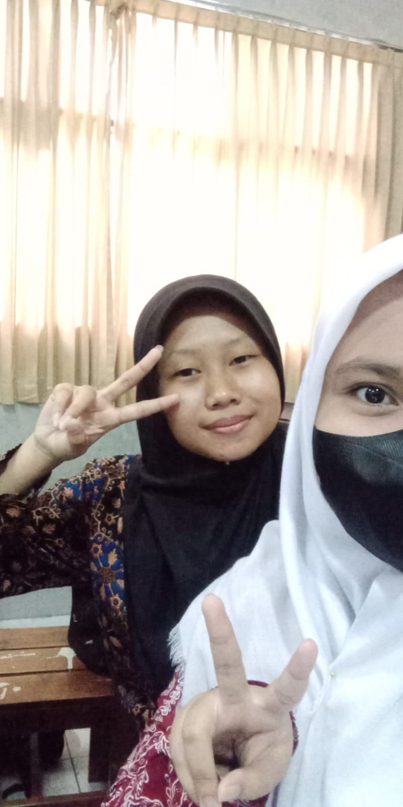
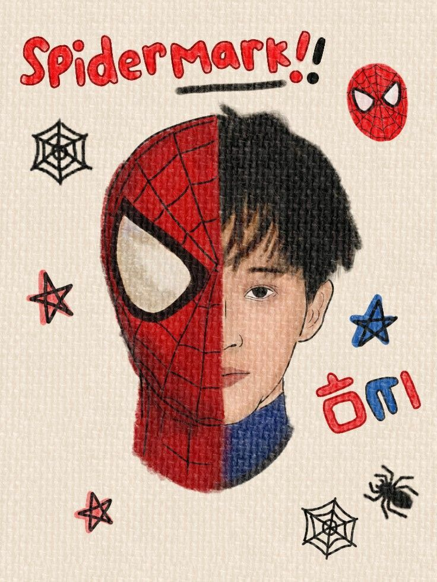

Hello, this is me.
| aku |
tentangku |
|  |
Saya tidak suka pedas karena perut saya tidak kuat, tapi saya suka pedas kecuali yang ada cabai nya. Saya suka taro bukan matcha. |
| Lagu yang sering saya putar ada banyak, salah banyaknya adalah: Losing us, We'll be okay for today, When I Was Your Man dan Tak Segampang Itu |
Nama saya Seanirma Aida Candrawati, saya lahir tanggal 16 Desember 2007. Saat ini saya sedang duduk dibangku kelas XI PPLG di SMKN 8 Semarang. Saya memiliki hobby yaitu membaca AU dan mendengarkan musik karena itu sangat menenangkan. Walaupun AU yang sering saya baca AU angst tapi itu seru karena menguras air mata dan emosi, contohnya HOIH dan Elegi Haekal dll. Saya suka mendengarkan musik karena secara tidak langsung itu mengekspresikan kata hati melalui sebuah lagu. Sedangkan cita cita saya adalah ingin menjadi pacar Jisung, tanpa sebab dan karena
Wishlist Sean
- Jadi pacar Jisung
- Kalo engga Jaemin
- Mark juga boleh
| Name |
Photo |
| Jisung |
|
| Haechan |
|
| Jaemin |
|
| Mark |
 |